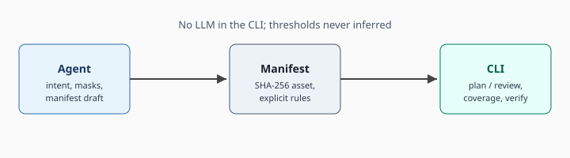
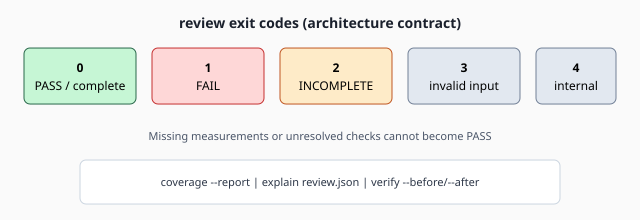

코딩 에이전트
생성한 스프라이트를 넘기기 전에 매니페스트를 검증하고, review 종료 코드로 게이트합니다. 측정값은 저장된 JSON에서만 인용합니다.
로컬 CLI · Python 3.11+ · MIT · v0.5.0
에이전트는 피처 이름과 매니페스트 초안을 만듭니다. CLI는 선언된 규칙만 재고 plan, review, coverage로 종료 코드를 냅니다. 계정, 크레딧, CLI 안의 LLM은 없습니다.
git clone https://github.com/munsunouk/I-mage-not-AI.git cd I-mage-not-AI python3 -m pip install -e .
에이전트 순서는 저장소의 i-mage-not-ai 스킬에 있습니다. 콘솔 진입점은 i-mage-not-ai이고, python3 -m i_mage_not_ai와 같습니다.
$ python3 -m i_mage_not_ai manifest validate icon-manifest.json { "status": "VALID", "schema_version": "0.5" } $ python3 -m i_mage_not_ai review --manifest icon-manifest.json --output review.json $ echo $? 0 $ python3 -m i_mage_not_ai coverage --report review.json { "completeness": "COMPLETE", "required": 2, "completed": 2, "checks": [ { "rule_id": "IMAGE-001", "status": "PASS" }, { "rule_id": "GEOMETRY-001", "status": "PASS" } ] }
누가 쓰나
생성한 스프라이트를 넘기기 전에 매니페스트를 검증하고, review 종료 코드로 게이트합니다. 측정값은 저장된 JSON에서만 인용합니다.
Godot·Unity 트레이스, 런타임 샘플, 렌더 프레임을 각각 검사합니다. game gate는 세 리포트가 모일 때 통과합니다.
benchmark score는 한 데이터셋 버전의 룰 단위 precision, recall, F1을 냅니다. 이미지 품질 점수가 아닙니다.
01 · Diff
비교는 선언된 임계값과 정확한 RGBA 차이입니다. 빠진 측정은 PASS가 되지 않습니다.
examples/icon/icon.png
이 아이콘의 무게중심이 선언한 범위 안에 있나?
python3 -m i_mage_not_ai review \ --manifest icon-manifest.json --output review.json python3 -m i_mage_not_ai explain review.json
{
"rule_id": "GEOMETRY-001",
"algorithm": "alpha_centroid_offset",
"status": "PASS",
"measured": 0.011048543456039806,
"threshold": 0.03
}
review PASS는 선언된 검사가 빠짐없이 통과했다는 뜻입니다. 이미지의 출처를 판별하지 않습니다. 이 매니페스트의 임계값은 max_normalized_centroid_offset: 0.03입니다.
diff / verify
고친 파일에서, 허용한 곳 밖이 바뀌었나?
i-mage-not-ai diff --before original.png --after edited.png i-mage-not-ai verify --before original.png --after edited.png \ --report review.json
status changed_pixels changed_ratio changed_bbox changed_pixels_outside_allowed_region formula "count(before RGBA != after RGBA); comparison is exact per pixel"
diff는 허용 영역 없이 픽셀이 같아야 PASS입니다. verify는 리포트의 allowed_region 또는 allowed_mask를 읽고, 그 밖이 한 픽셀이라도 다르면 종료 코드 1입니다. 크기가 다르면 dimension_mismatch입니다.
game gate
이 장면이 화면에 맞게 나왔나?
i-mage-not-ai game analyze --trace motion-trace.json --policy policy.json \ --output trace.json i-mage-not-ai game runtime-check --evidence runtime.json --policy runtime-policy.json \ --output runtime-report.json i-mage-not-ai game render-check --evidence render.json --policy render-policy.json \ --output render-report.json i-mage-not-ai game gate \ --review-report trace.json \ --runtime-report runtime-report.json \ --render-report render-report.json
이미지 review PASS는 게임 게이트 PASS를 대신하지 않습니다. project preview는 읽기 전용입니다. 엔진을 띄우는 project export-trace와 game capture는 --allow-project-code가 있을 때만 프로젝트 코드를 실행합니다.
같은 기둥의 다른 명령: inspect, measure, compare --feature, sprite-sheet check, lighting check.
02 · Review
X-AnyLabeling 후보는 제안입니다. 필요한 피처가 승인되지 않았거나 후보가 미분리로 남아 있으면 리뷰는 INCONCLUSIVE입니다.
delegate → plan → review
이번 에셋에서 무엇을, 어느 임계값으로 재나?
i-mage-not-ai delegate preview --manifest manifest.json i-mage-not-ai delegate rules --manifest manifest.json --rules-file rules.yaml i-mage-not-ai plan --manifest manifest.json --rules-file rules.yaml --output plan.json i-mage-not-ai review --manifest manifest.json --plan plan.json --rules-file rules.yaml --output review.json i-mage-not-ai coverage --report review.json i-mage-not-ai explain review.json
임계값은 매니페스트나 rules.yaml에만 있습니다. plan의 execution_plan과 bindings를 고치면 CLI가 계획을 거절합니다. 각 review_intent에는 비어 있지 않은 purpose와 threshold_source가 필요합니다. 임계값이 문서에 없으면 숫자를 만들지 않고, 그 검사는 끝낼 수 없습니다.


03 · Stabilize
알고리즘 버전은 룰 팩에 고정되어 있습니다. 확신이 없으면 종료 코드 2이고, 그 상태를 PASS로 올리지 않습니다.
빠진 측정, 지원하지 않는 능력, 의미가 갈리는 경계는 INCONCLUSIVE입니다. 종료 코드 2는 통과가 아닙니다.
character anatomy는 저장된 OpenPose BODY_25 JSON과 명시적 policy가 있을 때 비율과 각도를 잽니다. similarity --metric lpips|dinov2는 로컬 가중치만 사용합니다. 둘 다 review 밖이고, 가중치나 증거가 없으면 INCONCLUSIVE입니다.
verify의 허용 마스크 안은 지나갑니다. 그 밖의 새 픽셀은 다음 실행에서도 FAIL입니다. 핑거프린트 서비스나 계정은 없습니다.
OpenPose 추론은 이 패키지에 포함되어 있지 않습니다. 그 라이선스는 학술·비영리 비상업 연구로 제한됩니다. DINOv2는 --model-dir가 필요하고, 원격 모델 다운로드는 꺼져 있습니다.
벤치마크
benchmark score는 ground truth의 {case_id, rule_id} 위반과 예측의 FAIL만 비교합니다. 분모가 0이면 그 지표는 null입니다.
| 칸 | 의미 |
|---|---|
| TP / FP / FN | 룰 단위로 맞춘 위반, 없는 위반을 있다고 한 것, 놓친 위반 |
| precision / recall / F1 | 위 카운트로 계산. 이미지 품질이나 출처 판별이 아님 |
| leaderboard | 합성 아이콘의 팔레트·여백 결함만. 남은 위반이 적을수록, 그다음 수리 성공, 그다음 보존. 검출 F1은 적히지만 수리 순위를 정하지 않음 |
i-mage-not-ai benchmark score \ --ground-truth benchmark/ground-truth.json \ --predictions predictions.json \ --output benchmark-score.json i-mage-not-ai benchmark gallery \ --dataset benchmark/synthetic/dataset.json \ --submission benchmark/submission.json \ --result benchmark/result.json \ --output benchmark/gallery/index.html
gallery가 만드는 HTML은 로컬 비교표입니다. 이 페이지와 별개이고, 상대 경로의 이미지가 옆에 있어야 열립니다.
FAQ
없습니다. 기본 설치 경로는 네트워크 호출과 LLM 없이 동작합니다. 텔레메트리를 보내지 않습니다.
알려 주지 않습니다. 명시적으로 적은 디자인 제약을 검사합니다. PASS는 그 검사가 빠짐없이 통과했다는 뜻입니다.
정하지 않습니다. 매니페스트나 프로젝트 룰에 없는 임계값은 “필요”로 남기고, 통과시키기 위해 값을 느슨하게 만들지 않습니다.
없습니다. 트레이스, 런타임, 렌더 리포트가 각각 끝난 뒤에 game gate가 모읍니다. 트레이스만 볼 작업은 트레이스 PASS에서 멈춥니다.
저장소 README의 명령 표와 architecture, game three-tower, rule authoring이 기준입니다. 이 페이지는 그 계약을 작업 순서로 다시 적은 것입니다.